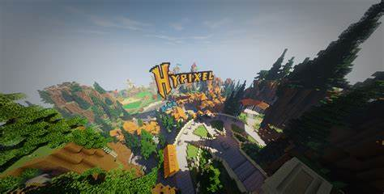

Datum založení neznáme ale víme že byl založenej v Dubnu 2013
Místo původu jsou Spojené státy americké
Zakladatelé serveru jsou Hypixel a Rezzus
Celkový počet unikátních hráčů: více než 7 000 000
Spolu s Mineplex je Hypixel jedním z nejpopulárnějších Minecraft serverů, které kdy byly vytvořeny
Hráč HubBubTheNerdy, byl oslavován jako 7 000 000 hráč (v roce 2015)
Hypixel zůstal populární tak dlouho kvůli tomu, jak masivní je to svět a jeho jedinečné minihry
